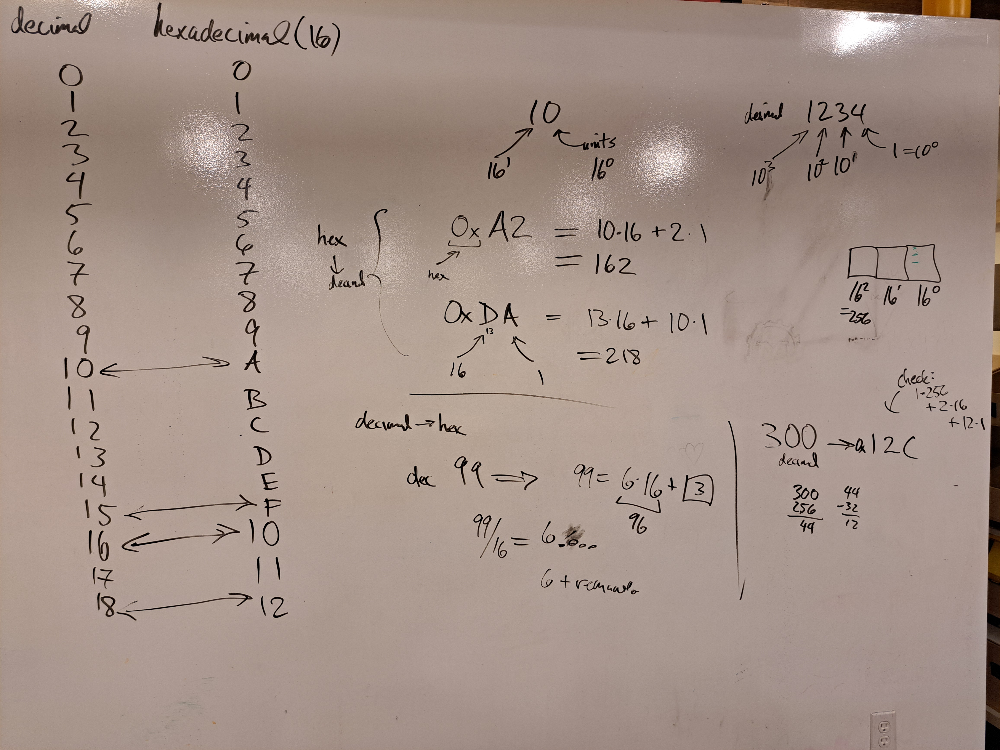
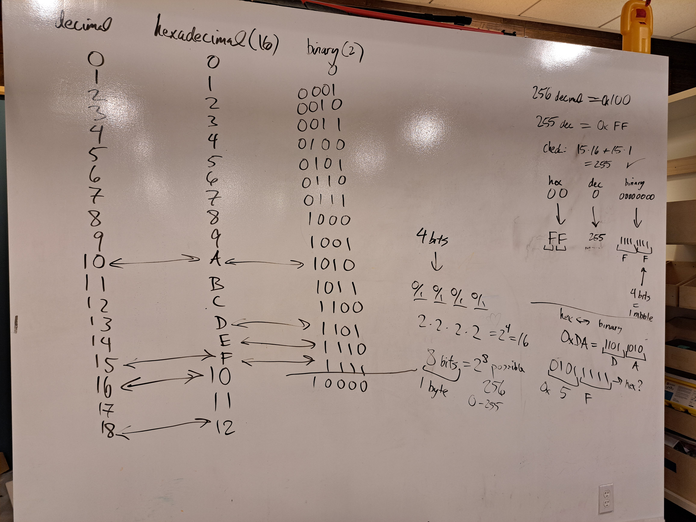
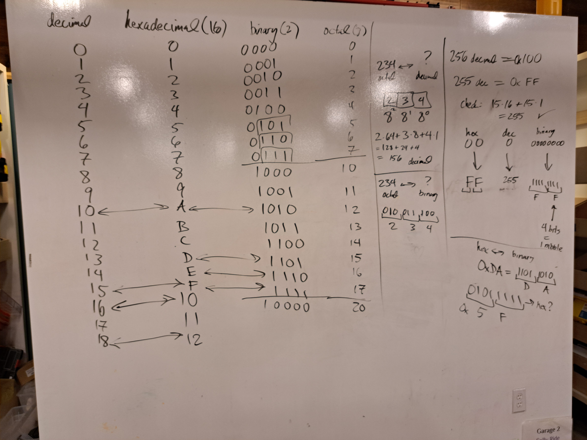

Unit 0: Numeric Conversion
Counting in binary
decimal
binary
hexadecimal
octal
Decimal and Hexadecimal
Decimal is base 10. The digit positions correspond to powers of 10.
\[\begin{split}
\begin{aligned}
1234\,_\text{DEC} &= \underset{10^3}{\fbox{ 1 }} \underset{10^2}{\fbox{ 2 }} \underset{10^1}{\fbox{ 3 }} \underset{10^0}{\fbox{ 4 }} \\
&= 1 \cdot 10^3 + 2 \cdot 10^2 + 3 \cdot 10^1 + 4 \cdot 10^0 \\
&= 1000 + 200 + 30 + 4
\end{aligned}
\end{split}\]
Hexadecimal (hex) is base 16. In hexadecimal we have 16 symbols: the 10
decimal symbols (0-9) and 6 letters (A-F).
\[\begin{split}
\begin{array}{|c|c|}
\hline
\text{decimal} & \text{hexadecimal} \\
\hline
0 & 0 \\
1 & 1 \\
2 & 2 \\
3 & 3 \\
4 & 4 \\
5 & 5 \\
6 & 6 \\
7 & 7 \\
8 & 8 \\
9 & 9 \\
10 & A \\
11 & B \\
12 & C \\
13 & D \\
14 & E \\
15 & F \\
\hline
\end{array}
\end{split}\]
The digit positions correspond to powers of 16. In code, we write hex numbers
with the prefix 0x. Here are some examples:
\[\begin{split}
\begin{aligned}
\text{0x10} &= \underset{16^1}{\fbox{ 1 }} \underset{16^0}{\fbox{ 0 }} \\
&= 1 \cdot 16^1 + 0 \cdot 16^0 \\
&= 1 \cdot 16 + 0 \cdot 1 \\
&= 16\,_\text{DEC}
\end{aligned}
\end{split}\]
\[\begin{split}
\begin{aligned}
\text{0xA2} &= \underset{16^1}{\fbox{ A }} \underset{16^0}{\fbox{ 2 }} \\
&= 10 \cdot 16^1 + 2 \cdot 16^0 \\
&= 10 \cdot 16 + 2 \cdot 1 \\
&= 162\,_\text{DEC}
\end{aligned}
\end{split}\]
\[\begin{split}
\begin{aligned}
\text{0x29A} &= \underset{16^2}{\fbox{ 2 }} \underset{16^1}{\fbox{ 9 }} \underset{16^0}{\fbox{ A }} \\
&= 2 \cdot 16^2 + 9 \cdot 16^1 + A \cdot 16^0 \\
&= 2 \cdot 256 + 9 \cdot 16 + 10 \cdot 1 \\
&= 666\,_\text{DEC}
\end{aligned}
\end{split}\]
Converting from Decimal to Hex
To convert from decimal to hex, pretend you are making change.
Example To convert \(99_\text{DEC}\) to hex, we first ask how many 16’s it
contains. We compute \(6 \cdot 16 = 96\), with remainder 3.
\[\begin{split}
\begin{aligned}
99\,_\text{DEC} &= 6 \cdot 16 + 3 \\
&= \text{0x}63 \\
\end{aligned}
\end{split}\]
Example To convert \(300_\text{DEC}\) to hex, we
first ask how many 256’s it contains (one, with remainder 44).
Then we ask how many 16’s are contained in 44 (2, with remainder 12).
\[\begin{split}
\begin{aligned}
300\,_\text{DEC} &= 1 \cdot 256 + 2 \cdot 16 + 12 \\
&= \text{0x}12C \\
\end{aligned}
\end{split}\]
Binary
Binary is base 2, so we have just two symbols: 0 and 1.
\[\begin{split}
\begin{array}{|c|c|r|}
\hline
\text{decimal} & \text{hexadecimal} & \text{binary} \\
\hline
0 & 0 & 0 \\
1 & 1 & 1 \\
2 & 2 & 10 \\
3 & 3 & 11 \\
4 & 4 & 100 \\
5 & 5 & 101 \\
6 & 6 & 110 \\
7 & 7 & 111 \\
8 & 8 & 1000 \\
9 & 9 & 1001 \\
10 & A & 1010 \\
11 & B & 1011 \\
12 & C & 1100 \\
13 & D & 1101 \\
14 & E & 1110 \\ 15 & F & 1111 \\
\hline
\end{array}
\end{split}\]
A binary digit is called a bit.
Notice that with 4 bits, we have \(2^4 = 16\) possibilities:
\[
\underset{2}{\fbox{ 0/1 }} \underset{2}{\fbox{ 0/1 }} \underset{2}{\fbox{ 0/1 }} \underset{2}{\fbox{ 0/1 }}
\]
And with 8 bits, we have \(2^8 = 256\) possibilities:
\[
\underset{2}{\fbox{ 0/1 }} \underset{2}{\fbox{ 0/1 }} \underset{2}{\fbox{ 0/1 }} \underset{2}{\fbox{ 0/1 }}
\underset{2}{\fbox{ 0/1 }} \underset{2}{\fbox{ 0/1 }} \underset{2}{\fbox{ 0/1 }} \underset{2}{\fbox{ 0/1 }}
\]
A byte is 8 bits (and sometimes 4 bits is called a nibble).
We seen that there are 256 possible bytes, corresponding to the decimal values
\(0 - 255\), which correspond to the binary values \(00000000 - 11111111\), which
correspond to the 2 digit hex values \(\text{0x}00 - \text{0x}FF\).
Converting between Hex and Binary
One hex digit corresponds to 4 bits, which makes it easy to convert
between hex and binary.
Example
\[\begin{split}
\begin{aligned}
\fbox{ 7 }
\fbox{ C }
&=
\underset{7}{\fbox{0111}}
\underset{C}{\fbox{1100}} \\
\\
\text{0x}7C &= 0111 \, 1100 \, _\text{BIN}
\end{aligned}
\end{split}\]
Example
\[\begin{split}
\begin{aligned}
\fbox{ F }
\fbox{ F }
&=
\underset{F}{\fbox{1111}}
\underset{F}{\fbox{1111}} \\
\\
\text{0x}FF &= 1111 \, 1111 \, _\text{BIN}
\end{aligned}
\end{split}\]
Example
\[\begin{split}
\begin{aligned}
\fbox{ 2 }
\fbox{ 9 }
\fbox{ A }
&=
\underset{2}{\fbox{0010}}
\underset{9}{\fbox{1001}}
\underset{A}{\fbox{1010}} \\
\\
\text{0x}29A &= 0010 \, 1001 \, 1010 \, _\text{BIN}
\end{aligned}
\end{split}\]
Octal
Octal is base 8, and we use the eight numeric symbols 0-7.
\[\begin{split}
\begin{array}{|c|c|r|r|}
\hline
\text{decimal} & \text{hexadecimal} & \text{binary} & \text{octal} \\
\hline
0 & 0 & 0 & 0 \\
1 & 1 & 1 & 1 \\
2 & 2 & 10 & 2 \\
3 & 3 & 11 & 3 \\
4 & 4 & 100 & 4 \\
5 & 5 & 101 & 5 \\
6 & 6 & 110 & 6 \\
7 & 7 & 111 & 7 \\
8 & 8 & 1000 & 10 \\
9 & 9 & 1001 & 11 \\
10 & A & 1010 & 12 \\
11 & B & 1011 & 13 \\
12 & C & 1100 & 14 \\
13 & D & 1101 & 15 \\
14 & E & 1110 & 16 \\
15 & F & 1111 & 17 \\
\hline
\end{array}
\end{split}\]
Example
\[\begin{split}
\begin{aligned}
\text{234}\,_\text{OCT} &= \underset{8^2}{\fbox{ 2 }} \underset{8^1}{\fbox{ 3 }} \underset{8^0}{\fbox{ 4 }} \\
&= 2 \cdot 8^2 + 3 \cdot 8^1 + 4 \cdot 8^0 \\
&= 2 \cdot 64 + 3 \cdot 8 + 4 \cdot 1 \\
&= 156 \, _\text{DEC}
\end{aligned}
\end{split}\]
One octal digit corresponds to 3 bits (\(2^3 = 8\)), so conversions
between octal and binary are also straightforward.
Example
\[\begin{split}
\begin{aligned}
\fbox{ 2 }
\fbox{ 3 }
\fbox{ 4 }
&=
\underset{2}{\fbox{010}}
\underset{3}{\fbox{011}}
\underset{4}{\fbox{100}} \\
\\
234\,_\text{OCT} &= 010 \, 011 \, 100 \, _\text{BIN}
\end{aligned}
\end{split}\]
To convert decimal to octal, pretend you are making change.
Example
To convert \(100_\text{DEC}\) to octal, we first ask how many 64’s it
contains (1, with remainder 36). Then we ask how many 8’s are in 36
(4, with remainder 4).
\[\begin{split}
\begin{aligned}
100\,_\text{DEC} &= 1 \cdot 64 + 4 \cdot 8 + 4 \cdot 1 \\
&= 144\,_\text{OCT} \\
\end{aligned}
\end{split}\]
Original notes


